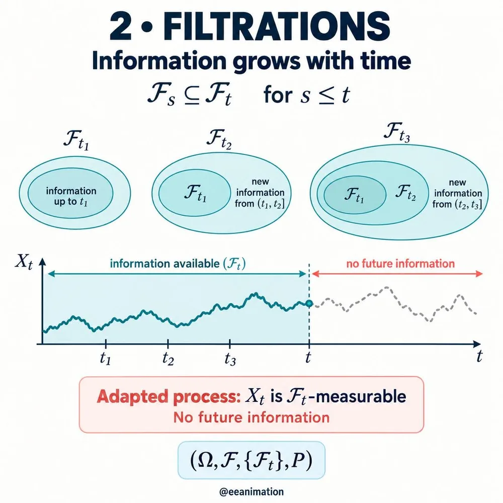

기둥 1 · 무작위를 기록하는 법 · 03장
필트레이션 — 정보는 시간과 함께 쌓인다
「지금까지 아는 것」에 이름을 붙이고, 미래 엿보기를 금지하는 규칙
「지금까지 아는 것」에 이름을 붙이고, 미래 엿보기를 금지하는 규칙
핵심 질문 — 「지금 시점에 아는 것」을 수학으로 어떻게 적고, 왜 그게 중요할까?
확률해석에는 「미래를 엿보면 안 된다」는 규칙이 공식처럼 들어 있어요. 시각마다 「지금까지 알게 된 정보」를 모은 것을 필트레이션이라 부르고, 그 정보만으로 정해지는 과정을 적합 과정이라 해요. 이 규칙이 07장 이토 적분의 「왼쪽 끝」으로 이어집니다.
숫자 요약은 이 장의 예시 계산에서 나온 값입니다(실제 데이터가 아닌 설명용 값).
오늘은 역할극입니다. 모아가 동전을 하나씩 공개하고, 여러분은 「지금 답할 수 있는 질문」을 골라요.
동전은 4개! 저만 결과를 알고 있어요. 하나씩만 보여 줄게요.
행렬·벡터, 복잡한 공식을 몰라도 됩니다. 그림을 움직여 보고, 밑줄 친 말을 누르면 뜻이 나옵니다.
앞 시각의 정보는 뒤 시각에 모두 남아요. 정보는 쌓이기만 해요.
Xₜ가 𝓕ₜ-가측 — 지금까지의 정보만으로 값이 정해져요. 미래 정보 금지.
(Ω, 𝓕, {𝓕ₜ}, P): 결과 모음 · 사건 목록 · 정보의 줄 · 확률을 한 묶음으로.
원자료(영어) 그림 03번을 한국어로 다시 그렸어요. 원자료에서 바로잡은 곳은 이 그림에 이미 반영했어요.
이 페이지 사용법: 밑줄 친 말을 누르면 뜻이 나옵니다(Esc로 닫기). 단계마다 그림을 직접 움직여 보고, 끝의 확인 퀴즈로 점검하세요. 앞 장: 02 확률과정 — 시간 위에 늘어선 확률변수
모아가 「동전 공개 담당」, 나머지 수강생이 「질문 받는 사람」이 되어, 동전을 하나씩 공개할 때마다 답할 수 있는 질문이 늘어나는 것을 몸으로 겪어 봅니다.
동전 네 개면 결과는 16가지예요. 제가 세어 봤어요.
공개 전에는 아무 질문에도 답 못 하겠네요…
「지금까지 동전 2개를 봤다」를 수학으로 적어 두면, 어떤 질문에 답할 수 있고 어떤 질문은 아직인지 기계적으로 가를 수 있어요.
미래 값을 쓴 전략은 모의실험에서 늘 대박이 나요. 필트레이션은 「그 전략은 실제로 쓸 수 없다」고 판정하는 기준이에요.
06장 마팅게일(지금까지 정보로 본 미래 평균), 07장 이토 적분(왼쪽 끝 = 지금 값), 11장 정지시간(지금까지 정보로 멈추기)이 모두 필트레이션 위에 서 있어요.
이번 장에는 계산이 거의 없어요. 「지금 아는가, 모르는가」를 가르는 감각만 가져가면 됩니다.
상황 질문 — 스무고개에서 질문을 하나 할 때마다 정답 후보는 어떻게 바뀌나요? 한 번 지운 후보가 다시 살아날 수 있을까요?
𝓕ₜ는 숫자예요, 집합이에요? 꼬부랑 F가 또 나왔어요.
학교 수학으로 보면: 고등학교 「집합」의 원소가 「사건」인 집합이에요. 𝓕ₜ = 「시각 t에 예/아니오로 답할 수 있는 질문(사건)들의 모음」.
| 식 조각 | 읽는 법 | 뜻 |
|---|---|---|
| 𝓕ₜ | 에프 티 | 시각 t까지의 정보로 일어났는지 판정할 수 있는 사건들의 모음 |
| 𝓕ₛ ⊆ 𝓕ₜ (s ≤ t) | 에프 에스는 에프 티에 포함 | 앞 시각에 판정 가능했던 사건은 뒤 시각에도 판정 가능 |
| {𝓕ₜ} | 필트레이션 | 시각마다 커지는 정보 모음들의 줄 |
동전 4개, 진짜 결과 앞뒤앞앞. t = 0: 후보 16가지, 판정 가능한 질문 없음
t = 1 (앞 공개): 후보 8가지 → 「첫 동전이 앞인가?」 판정 가능
t = 2 (앞뒤 공개): 후보 4가지 → 「처음 두 개가 같은가?」 판정 가능 (아니다)
t = 4: 후보 1가지 → 모든 질문 판정 가능
후보가 16 → 8 → 4 → 2 → 1로 줄면서 답할 수 있는 질문이 늘기만 하네요. 줄어드는 일은 없고요.
스무고개에서 「동물인가요?」 「네」를 들은 순간, 식물 후보는 모두 지워져요. 다음 질문을 해도 식물이 다시 후보로 돌아오지는 않아요.
시각 t까지의 정보로 판정 가능한 사건 모음을 𝓕ₜ, 그 줄 {𝓕ₜ}를 필트레이션이라 해요. 앞 정보는 뒤에 모두 남으므로 𝓕ₛ ⊆ 𝓕ₜ (s ≤ t)예요.
시각 막대를 0부터 4까지 하나씩 올려 보세요. 표의 「예/아직 모름」이 어떻게 바뀌나요?
「앞면이 2개 이상?」은 동전 2개만 보면 알 수 있어요!
정말? t = 2에서 표를 확인해 봐. 앞뒤면 아직 모르잖아.
원자료 「2 · Filtrations」 위쪽의 커지는 타원 세 개(𝓕t₁ ⊆ 𝓕t₂ ⊆ 𝓕t₃)와 「Information grows with time」.

상황 질문 — 「내일 주가가 오르면 오늘 사고, 내리면 안 산다」는 전략은 수익이 엄청나요. 이 전략을 실제로 쓸 수 있을까요?
「Xₜ는 𝓕ₜ-가측」이라는 말이 너무 어려워요. 가측이 뭐예요?
학교 수학으로 보면: 「t까지의 정보가 있으면 Xₜ의 값을 알 수 있다」는 뜻이에요. 함수에서 입력(지금까지의 정보)만 알면 출력(Xₜ)이 정해지는 것과 같아요.
| 식 조각 | 읽는 법 | 뜻 |
|---|---|---|
| Xₜ는 𝓕ₜ-가측 | 엑스 티는 에프 티 가측 | t까지의 정보로 Xₜ의 값이 결정됨 (측정 가능) |
| 적합 과정 | 어댑티드 프로세스 | 모든 시각에서 그 성질을 가진 과정 |
| 엿보기 전략 | — | 오늘 결정에 내일 결과(𝓕ₜ 밖의 정보)를 쓰는 규칙 → 적합하지 않음 |
동전 날씨: 매일 주가 +1 또는 −1
「어제 올랐으면 오늘 산다」: 어제 결과는 𝓕ₜ 안 → 적합
「내일 오르면 오늘 산다」: 내일 결과는 𝓕ₜ 밖 → 적합하지 않음
200일 모의실험: 엿보기 전략 약 +100원, 적합한 전략 약 0원
엿보기 전략 수익이 크게 나와도 「쓸 수 없는 숫자」네요. 수익보다 정보 시점을 먼저 봐야겠어요.
시험 중에 옆 사람 답안을 보고 쓴 100점은 실력이 아니에요. 「시험지를 받은 뒤 내가 본 것」만으로 쓴 답이어야 진짜 점수예요.
모든 t에서 Xₜ가 𝓕ₜ 정보만으로 정해지면 적합 과정이라 해요. 원자료의 빨간 상자 「Adapted process: Xₜ is 𝓕ₜ-measurable — No future information」이 이 뜻이에요.
세 전략을 번갈아 고르고 「다른 날씨」를 여러 번 눌러 보세요. 늘 이기는 전략은 무엇이고, 왜 쓸 수 없나요?
내일 오르면 오늘 사는 전략, 매번 대박이에요! 이걸로 하죠!
내일 결과를 오늘 어떻게 알아? 그 전략은 적합하지 않아.
원자료 아래쪽: 시각 t까지 파란 영역(information available)과 오른쪽 회색 점선(no future information), 빨간 상자 「Adapted process」.
필터 확률공간 (Ω, 𝓕, {𝓕ₜ}, P)에서 과정 X가 적합(adapted)하다는 것은 모든 t에 대해 Xₜ가 𝓕ₜ-가측이라는 뜻이다. 흔히 𝓕ₜ로 X 자신이 만든 정보(자연 필트레이션) σ(Xₛ : s ≤ t)를 쓴다.
하루가 AI에게 과거 주가 데이터를 주고 「가장 수익이 좋은 매매 규칙을 찾아 줘」라고 했더니 이렇게 답했어요.
AI가 찾은 규칙이 너무 좋아 보이면, 규칙 문장에서 「다음」, 「이후」, 「최고였던」 같은 미래 정보가 숨어 있지 않은지 먼저 찾아보세요.
공정한 동전 주가로 200일 모의 투자를 200번 해서, 「내일 오르면 오늘 사기」와 「어제 올랐으면 오늘 사기」의 평균 수익을 비교했어요.
「엿본 전략은 수익이 커도 쓸 수 없어. 쓸 수 있는 전략은 평균 0 근처야.」
「수익이 큰 쪽이 좋은 전략이죠! 엿본 전략이 정답이에요.」
누가 맞을지 먼저 예상해 보고 단추를 누르세요. 판정은 계산 결과로만 합니다.
개념정리 흐름: 필트레이션 (쌓이는 정보) → 적합 과정 (미래 엿보기 금지)
| 개념 | 한 줄 뜻 | 일상 비유 | 비유의 한계 |
|---|---|---|---|
| 필트레이션 | 시각마다 판정 가능한 사건 모음, 쌓이기만 함 | 스무고개의 지워진 후보 | 연속 시간에서는 경로 모양 전체가 정보 |
| 𝓕ₛ ⊆ 𝓕ₜ | 앞 정보는 뒤 정보에 모두 남음 | 한 번 지운 후보는 안 돌아옴 | 잊어버리는 사람의 기억은 이렇지 않아요(수학의 정보는 안 잊음) |
| 적합 과정 | 시각 t의 값이 𝓕ₜ로 정해짐 | 시험지 받은 뒤 내가 본 것만으로 쓴 답 | 「정해진다」가 「쉽게 계산된다」는 뜻은 아니에요 |
| 엿보기 전략 | 𝓕ₜ 밖(미래) 정보를 쓴 규칙 | 옆 사람 답안 보고 쓴 100점 | 모의실험 수익은 커도 현실에서 실행 불가 |
오늘의 한 줄: 정보는 쌓이기만 하고, 결정은 지금까지의 정보로만.
동전 공개 담당 재밌었어요! 다들 「아직 모름」에서 손 내리는 표정이요.
대박 전략이 반칙이었다니… 수익 숫자에 속았어요.
다음은 브라운 운동이래. 조별 과제래.
다음 장 예고: 04장에서는 동전 걸음을 끝없이 잘게 쪼개 브라운 운동을 만들어요. 1조는 「쪼개기」, 2조는 「증분 확인」 조별 과제를 맡아요.